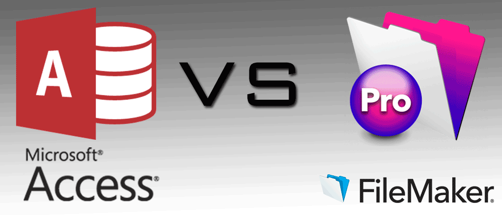

Для малых и средних предприятий, которые хотят сделать выбор между лучшей системой управления базами данных, я приведу сравнение между к Filemaker Pro и Microsoft Access.
Базы данных используются для хранения данных, которые синхронизируются с сервером, для быстрого доступа. Они служат в качестве онлайн инвентаризации, программного обеспечения компаний и защиту ее интеллектуальной собственности, а также чтобы защитить конфиденциальность пользователей. Управление базами данных эволюционировали от одного сервера к серверной базе данных на основе системы, которая обслуживает нескольких пользователей, и наконец веб-интегрированная база данных позволяет обновлять и удалять данные практически из любого места. Итак, возникает вопрос: какие особенности стоит искать при выборе такой системы? Двумя самыми популярными системами управления базами данных в настоящее время являются FileMaker Pro и Microsoft Access.
FileMaker Pro против Microsoft Access
Filemaker это программное обеспечение управления базами данных, которая начиналась как программа MS-DOS, но сейчас успешно работает на платформе Мас. Она имеет графический интерфейс с опциями перемещения и удаления для удобного управления данными. Она доступна на различных платформах, и последняя версия имеет дополнительные темы и шаблоны для создания баз данных iOS. Она может подключаться к базам данных SQL, таких как SQL Server и Oracle при установке (Open Database Connectivity ODBC) драйвера. На сегодняшний день эта программа претерпела значительные обновления, и в настоящее время имеет приложение, которое позволяет Вам управлять данными. Одной из особенностей является улучшенная кнопка «Popover», которая появляется если пользователь касается или щелкает мышью. FileMaker Pro занимает всего 26 МБ на диске, имеет емкость хранения до 8 ТБ данных в одном файле и 3 различные версии по вашему выбору, а именно, FileMaker Pro, FileMaker Pro Advanced, и FileMaker WebDirect для доступа к базе данных из веб-браузеров.
Microsoft Access была доступна как часть пакета Microsoft Office, в сочетании с другими программами, такими как Excel, Word, PowerPoint и др. Она хорошо работает в качестве клиентского приложения, предоставляя поддержку баз данных, таких как Oracle, Sybase и т. д. Размер приложения на диске 160МБ. Доступ позволяет хранить 1 Тб данных на сервере SharePoint, но только 2 ГБ хранение в одном файле.
Операционная платформа
Filemaker - это кросс-платформенная система базы данных, совместимая с Windows, OS X, и iOS.
Access, работает только на Windows и лучше адаптирована к Microsoft Office.
Потенциал базы данных
Filemaker Pro имеет такие объекты, как макеты, макеты с резюме, сценарии и подключаемые модули для постройки базы. Он использует скрипты и сторонние плагины для доступа к базе данных.
В Microsoft Access можно включить ряд объектов, таких как таблицы, запросы, формы, отчеты, страницы доступа к данным, макросы и модули. Доступ использует Visual Basic для приложений (VBA) в качестве языка разработки, который является подмножеством Visual Basic.
Количество пользователей
Access может поддерживать одновременно 255 пользователей.
Filemaker Server в сочетании с filemaker Pro, может поддерживать 250 пользователей одновременно.
Количество режимов
Filemaker Pro имеет 3 режима: режим конструктора (для редактирования дизайна макета), режим поиска (для поиска записей) и режим просмотра (для отображения записей).
Access имеет автоматизированный безопасный режим, для обнаружения любых проблем в пределах файла, инициируемый пользователем безопасный режим, позволяет запускать файлы, даже если они повреждены.
Безопасность
Filemaker Pro имеет 256-битное AES-шифрование для защиты данных на настольном компьютере или сервере, используемом для защиты секретной информации.
В Access доступ к файлам может быть обеспечен путем передачи на сервер Microsoft SQL. Это дает дополнительную защиту, обеспечивая безопасность рабочих групп, которые требуют имя пользователя и пароль, которые могут использоваться, чтобы определить права конкретного человека (чтение или чтение и запись).
Стоимость
Для одного пользователя filemaker Pro обойдется в 9,00 долларов в месяц на годовой основе. Для одного пользователя FileMaker Pro Advanced, взимается 15,00 долларов в месяц также на годовой основе. Для управления базой данных сервера, вы можете воспользоваться услугами FileMaker WebDirect, который существует на базе своих пользователей. Он стоит 54.00 доллара в месяц на 5 пользователей, и 279.00 долларов для 50 пользователей. Он распространяется по-разному для корпоративных лицензий, которые могут быть установлены на более чем один компьютер.
Пользователи Microsoft Access могут насладиться всеми преимуществами данного программного обеспечения, а также остального пакета Office за $ 6.99 в месяц, или $ 69.99 за весь год. Для семьи, вы можете заказать его за $ 9,99 в месяц или $ 99.99 в год. Для бизнес-пользователей, его стоимость будет 5.00 долларов за Office 365 Business Essentials, 8.25 долларов за Office 365 Business, и USD 12.50 для Office 365 Business Premium, согласно различным версиям.
Глядя на преимущества и недостатки Filemaker Pro и Microsoft Access, можно резюмировать, что пользователи, заплатившие за лицензию на Filemaker Pro имеют доступ к FileMaker серверу бесплатно. Чтобы запустить приложение на iPad или iPhone, вы можете скачать в FileMaker Go, которое можно загрузить бесплатно из магазина Apple. Microsoft Access идеально подойдет людям которые используют MS Office и его приложения, в то время как filemaker может быть использован даже людьми, которые являются новичками в программировании баз данных, благодаря технологии Drag-и-Drop интерфейса.